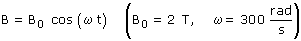
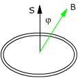
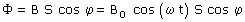
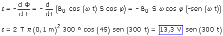

Para facilitar las cosas expresamos el campo magnético así:


Tomamos el vector superficie de la espira según el eje z positivo

Conocemos la expresión del flujo en función del tiempo, por tanto calculamos la f.e.m instantánea
